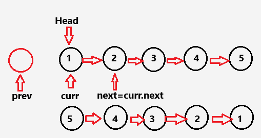

Bayesian Inference in Machine Learning: Part 1
7 min
Sunday, July 28, 2024

import time
def time_required(func):
def wrapper(*args, **kwargs):
starting = time.perf_counter()
output = func(*args, **kwargs)
ending = time.perf_counter()
elapsed = ending - starting
print(f'Time required: {elapsed:.6f} seconds')
return output
return wrapperclass Node:
def __init__(self, value, next=None) -> None:
self.value = value
self.next = next
def linklist(arr):
if not arr:
return None
head = Node(arr[0])
current = head
for value in arr[1:]:
current.next = Node(value)
current = current.next
return head
def print_linklist(head):
current = head
print("[", end="")
while current:
print(current.value, end=", " if current.next else "]")
current = current.next
print()
def reverse(head):
prev = None
curr = head
while curr:
next = curr.next
curr.next = prev
prev = curr
curr = next
return prev
h = linklist([1,2,3,4,5])
print('Original List:')
print_linklist(h)
h_reversed = reverse(h)
print('Reversed List')
print_linklist(h_reversed)Original List:
[1, 2, 3, 4, 5]
Reversed List
[5, 4, 3, 2, 1]def reverse_in_between(head, left, right):
dummy = Node(0, head)
leftPrev = dummy
curr = head
for _ in range(left-1):
leftPrev = curr
curr = curr.next
prev = None
tail = curr
for _ in range(right - left + 1):
next = curr.next
curr.next = prev
prev = curr
curr = next
leftPrev.next = prev
tail.next = curr
return dummy.next if left != 1 else prev
h = linklist([1,2,3,4,5])
print('Original List:')
print_linklist(h)
h_reversed = reverse_in_between(h,2,4)
print('Reversed List between 2 and 4')
print_linklist(h_reversed)Original List:
[1, 2, 3, 4, 5]
Reversed List between 2 and 4
[1, 4, 3, 2, 5]Say you have two arrays. Write a function to get the intersection of the two. For example, if \(A=[2,3,5,6,8]\) and \(B=[4,6,8]\), then the function should return \([6,8]\)
Brute ForceOne way to solve this problem is using brute force solution, that is using two nested loops. But this method takes the time complexity of \(O(n\times m)\) given that the lenght of set A is \(n\) and set B is \(m\). And here is how it is:
@time_required
def intersection_of_two_sets(A,B):
set_A = set(A)
set_B = set(B)
intersection = []
for a in set_A:
for b in set_B:
if a==b:
intersection.append(a)
return intersection
A = [2,3,5,6,8]
B = [4,6,8]
print(intersection_of_two_sets(A,B))Time required: 0.000005 seconds
[6, 8]Hash Map Approach: In hash map approach, we can solve the same problem but in this case the time and space complexity is \(O(n+m)\)
@time_required
def intersection_of_two_sets(A,B):
set_A = set(A)
set_B = set(B)
if len(set_A) < len(set_B):
return [a for a in set_A if a in set_B]
return [b for b in set_B if b in set_A]
A = [2,3,5,6,8]
B = [4,6,8]
print(intersection_of_two_sets(A,B))Time required: 0.000004 seconds
[8, 6]The reason we’re getting \([8,6]\) instead of \([6,8]\) is because sets in Python are unordered collections, meaning that when you convert the lists \(A\) and \(B\) to sets, the order of elements is not preserved. So, when we iterate over set_A or set_A, the order can change.
Better Approach: If we want to maintain the order of the elements in the original list \(A\) or \(B\), we can iterate over the original list directly rather than converting it to a set. Here’s how:
@time_required
def intersection_of_two_sets(A, B):
set_B = set(B)
return [a for a in A if a in set_B]
A = [2, 3, 5, 6, 8]
B = [4, 6, 8]
print(intersection_of_two_sets(A, B))Time required: 0.000002 seconds
[6, 8]Say we have an array of size \(n\). We want to find the maximum of the products of \(k\) elements from the array where \(k < n\). For example, if we set \(k=3\) and if we have \(A=[1,2,3,4,5,6]\) then the answer is 120, if we have \(B=[-3,-4,3,5]\) then the answer is 60.
Solution
nlargest and nsmallest are two functions from the heapq library that returns \(n\) largest and \(n\) smallest numbers in decreasing and increasing order, respectively. For example,
import heapq
A = [1,2,3,4,5,6]
B = [-3,-4,3,5]
print('For set {} \n largest 3 numbers {} \n smallest 2 numbers'.format(A,heapq.nlargest(3,A)),heapq.nsmallest(2,A))
print('\n')
print('For set {} \n largest 3 numbers {} \n smallest 2 numbers'.format(B,heapq.nlargest(3,B)),heapq.nsmallest(2,B))For set [1, 2, 3, 4, 5, 6]
largest 3 numbers [6, 5, 4]
smallest 2 numbers [1, 2]
For set [-3, -4, 3, 5]
largest 3 numbers [5, 3, -3]
smallest 2 numbers [-4, -3]Now if all the elements are positive, then the maximum product of \(k=3\) elements would just be the product of the largest three element. However, if the set contains negative numbers like the one in the example, product of the smallest two negative numbers and the first element from the nlargest element that would be the largest.
k = 3
def max_of_three_element_product(arr):
m = heapq.nlargest(k, arr)
n = heapq.nsmallest(k-1, arr)
return max(m[0]*m[1]*m[2], m[0]*n[0]*n[1])
A = [1,2,3,4,5,6]
B = [-3,-4,3,5]
print('Max product of {} elements from set A={} is'.format(k,A), max_of_three_element_product(A))
print('Max product of {} elements from set B={} is'.format(k,B), max_of_three_element_product(B))Max product of 3 elements from set A=[1, 2, 3, 4, 5, 6] is 120
Max product of 3 elements from set B=[-3, -4, 3, 5] is 60@time_required
def knearest(points: list[list[int]], k: int) -> list[list[int]]:
dis = []
for x in points:
d = pow(pow(x[0],2)+pow(x[1],2),0.5)
dis.append((x,d))
dis.sort(key= lambda item: item[1])
return [x for x,_ in dis[:k]]
pts = [[2,-1],[3,2],[4,1],[-1,-1],[-2,2]]
k = 3
print(knearest(pts,k))Time required: 0.000010 seconds
[[-1, -1], [2, -1], [-2, 2]]Share on
You may also like
@online{islam2024,
author = {Islam, Rafiq},
title = {Data {Structure} and {Algorithms:} {Basic} {Programming}
{Hacks}},
date = {2024-09-11},
url = {https://mrislambd.github.io/jobandintern/dsa/},
langid = {en}
}